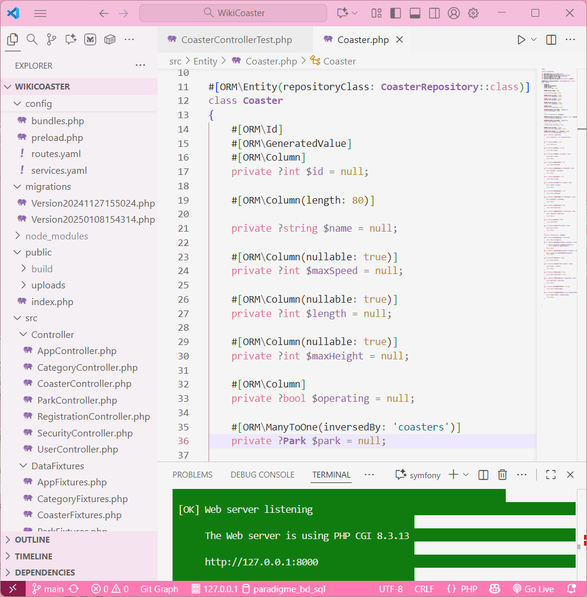

Aperçu du projet

Description du projet
WikiCoaster est une application web de type « wiki » permettant aux utilisateurs de consulter et d'éditer des fiches sur des montagnes russes et parcs d'attractions. Développée avec le framework Symfony, elle s'appuie sur une base de données SQLite pour la persistance des données.
Le projet met l'accent sur la structuration MVC, la gestion d'authentification, la CRUD des entités principales (parcs, attractions, constructeurs, utilisateurs), et la mise en place d'une interface simple et responsive.
Technologies utilisées
Fonctionnalités clés
- Gestion des attractions : CRUD complet sur les montagnes russes, parcs, constructeurs.
- Comptes utilisateurs : Authentification, rôles (admin/utilisateur).
- Page d'accueil dynamique : Affichage des attractions les plus récentes ou populaires.
- Recherche & filtres : Recherche par nom, type, constructeur ou pays.
- Interface d'administration : Gestion avancée du contenu via le back-office Symfony.
Défis techniques rencontrés
- Conception de la base de données : Modélisation des relations entre parcs, constructeurs et attractions.
- Intégration Twig : Création de vues dynamiques et réutilisables.
- Routing Symfony : Mise en place de routes REST et CRUDs propres.
- Gestion des rôles : Sécurisation des pages selon le rôle de l'utilisateur.
Compétences développées
Back-end Web
Symfony, Entités, Contrôleurs, Repositories
Base de Données
SQLite, Doctrine ORM, migrations, relations
Front-end
Twig, JavaScript, templating, Bootstrap
Gestion de Projet
GitHub, organisation en équipe, MVC propre
Conclusion du Projet
WikiCoaster m'a permis de consolider mes compétences en développement web back-end avec Symfony. Ce projet m'a appris à structurer une application MVC complète, à gérer la persistance des données avec Doctrine, et à créer une interface utilisateur dynamique via Twig. L'utilisation de SQLite a simplifié le développement local tout en offrant une gestion fiable des données.